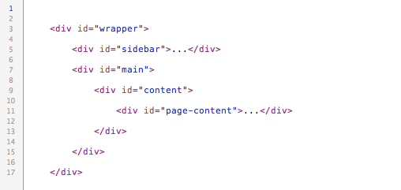
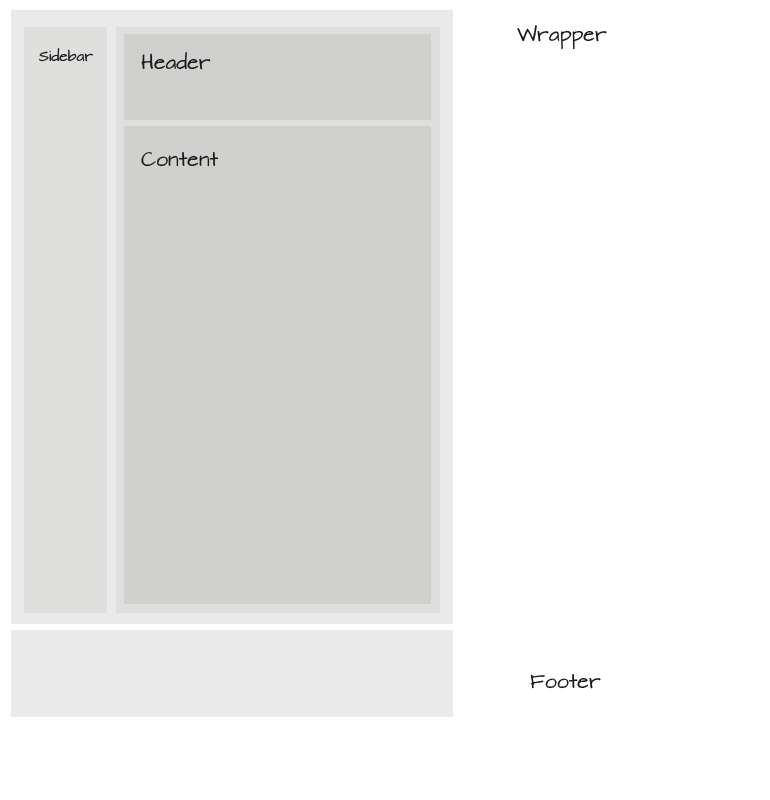
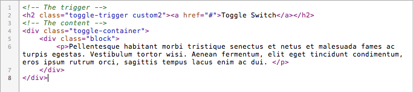
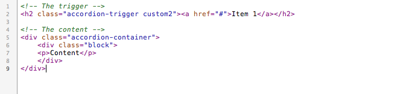
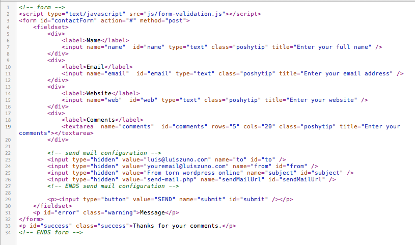
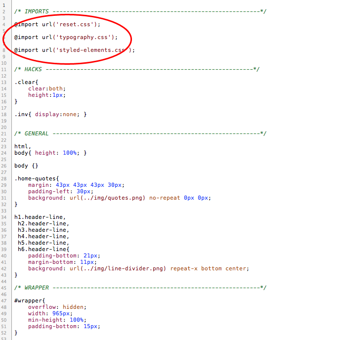

“Left” Documentation by “ansimuz v1.0
“LEFT TEMPLATE”
Created: 16/03/2011
By: Luis Zuno aka ansimuz
Email: luis@luiszuno.com
Thank you for downloading my theme. If you like this file you may like some of my premium items found on themeforest portfolio Visit portfolio. Thanks so much!
Table of Contents
A) HTML - top
This theme is a fixed layout theme made in HTML 5 With 8 page layouts and a skin system to change the appearance editing or adding files in the skin folder. The main structure is as follow:
HTML STRUCTURE
- WRAPPER
- SIDEBAR
- MAIN
- HEADER
- CONTENT
- PAGE CONTENT
- FOOTER


FILE LIST
The html folder contains all the necesary files to build a website it contains. Heres the list of files and folders:
blog-compact.html
blog.html
contact.html
css (Folder containing all the necesary style sheets)
features-accordion.html
features-icons.html
features-social-icons.html
features-tabs.html
features-toggle.html
features-typography.html
features.html
gallery-fourcols.html
gallery-video.html
gallery.html
images (Folder containing the slider images)
img (Contains all the image files)
index.html
js (Javascript files)
single.html
skins (Skin folders for the theme appearance)
skins.html
STYLED ELEMENTS
COLUMNS
Set the columns by placin the content for that column inside the divs as shown below and having the "last" class for the last div. The div clear shown in the image is optional if you dont desire columns overlaping.

TOOLTIPS
For the tooltips i am using a javascript library called poshytip its very easy to set up. The default browser tooltip that displays the value of the title attribute is replaced with a "poshier" version just add a title text and a class of poshytip.
Example
<a href="#" title="I am a tooltip" class="poshytip">Tool tip</a>
<img src="image.jpg" title="I am a tooltip" class="poshytip" alt="Image" />
ACCORDION AND TOGGLE BOXES
This template includes a left way to make toggle and accordion boxes using the magic of Jquery.
Code example
TOGGLE BOX
A trigger link
<h2 class="toggle-trigger custom"><a href="#">Toggle Switch</a></h2> and a div block nested inside a container block div.
<div class="toggle-container">
<div class="block">
<p>Content</p>
</div>
</div>

ACCORDION
A trigger link
<h2 class="accordion-trigger custom"><a href="#">Accordion Switch</a></h2> and a div block nested inside a container block div.
<div class="accordion-container">
<div class="block">
<p>Content</p>
</div>
</div>

TABS
I am using a javascript library for the tabs you can find the source and more documentation here.
Here is the minimal HTML code to get tabs working:
<!-- the tabs --> <ul class="tabs"> <li><a href="#">Tab 1</a></li> <li><a href="#">Tab 2</a></li> <li><a href="#">Tab 3</a></li> </ul>
<!-- tab "panes" --> <div class="panes"> <div>pane 1 content</div> <div>pane 2 content</div> <div>pane 3 content</div> </div>
GALLERY
You can have your gallery in 2 or four columns
The HTML structure for the gallery is:
- Flter
- Thumbs
- Pager

BLOG
You can have two layouts for the blog fullwidth and compact. The files for the blog are
blog.html
blog-compact.html
Fullwidth HTML example
<div class="post"> .. </div>
Compact HTML example
<div class="post compact"> .. </div>
CONTACT
For the contact form 3 files are used one for the HTML (contact.html) another for the FORM VALIDATION (js/form-validation.js) and the PHP (send-mail.php) that actually sends the data .
The HTML

Configuring the email recipients and data
To set the sender and the recipients just change the value for the hidden input values inside the contact.html.

Form validation
Form-validation.js and post-validation.js This is the javascript validation for the fields.
How to add fields to the contact form:

TWITTER CONFIGURATION
Open the js/custom.js file and edit the variables for the twitter section:
// Tweet
$(".tweet").tweet({
username: "ansimuz",
join_text: "auto",
avatar_size: 32,
count: 3,
auto_join_text_default: "we said,",
auto_join_text_ed: "we",
auto_join_text_ing: "we were",
auto_join_text_reply: "we replied to",
auto_join_text_url: "we were checking out",
loading_text: "loading tweets..."
});
B) CSS Files and Structure - top
This theme uses several css files contained in the css folder. There are 2 main important files for the theme: styles.css, typography.css. For the colors and backgrounds for the skin look in the skins/name-of-the-skin/styles.css
Css files:
ie7-hacks.css (hacks to display internet explorer 7 correctly)
ie8-hacks.css (hacks to display internet explorer 8 correctly)
jflickrfeed.css (Styles for the flickr feed)
jquery.tweet.css (Styles for the twitter)
nivo-slider.css (Styles for the slideshow)
reset.css
social-icons.css
style.css (Main styles)
styled-elements.css (Styles for the buttons, boxes, etc)
superfish-left.css (dropdown styles)
superfish.css (dropdown styles)
tabs.css
typography.css (All the typography styles)
This theme imports 3 styles a the begining of the main styles (styles.css). The styles are ordered in importance and position of the theme so the main and header styles are at the top and the footer an lesser styles are at the bottom.

C) Image Files - top
The included image files in the downloadable package contain PSD and PNG files used in the layout
You have all the editable graphic elements in the PSD folder.
The image files for this theme is as follow:
comments-balloon.png
drop-arrow-white.png
drop-arrow.png
dummies (dummie images to feed content)
filterbar-bottom.png
filterbar-top.png
filterbar.png
knobs-icons ( icons used in the info boxes)
line-divider.png
link-button-dark-over.png
link-button-dark.png
link-button-over.png
link-button.png
logo.png
mono-icons (general icons)
nav-item.png
nivo-arrows.png
pager.png
play-button.png
plus-button.png
post-divider.png
quotes.png
search-bg.png
search-submit.png
sidebar-line-divider.png
slider-nav.png
slider-shadow.png
social-icons
tab-bg.png
tag.png
to-top-arrow.png
D) JavaScript - top
You can control almost all the config for the javaascript functionality inside the "js/custom.js" file.
JS FILES LIST
- jQuery is a Javascript library that greatly reduces the amount of code that you must write.
- DD_belatedPNG.js Fixes the transparency png issue in IE.
- easing.js Library for the easing Fx.
- form-validation.js Needed for the validation of the contact form.
- jflickrfeed Feeds the flickr entries
- fancybox Used for the image pop up windows
- quicksand Filterable content on the galleries javascript library
- superfish For the dropdown menus
- tabs tabbed content
- tweet Javascript library that feeds latest tweets
E) PSD Files - top
I have included all the page layouts as well the web elements such buttons and icons.
- Main.psd The front page of the theme with the background elements editable
- blog.psd Layout for the blog
- gallery.psd Layout for the galleries
- portfolio.psd layout for the porfolio listing
- portfolio-single.psd
- elements (This folder holds all the graphic web elements for the theme also includes the templates for the skins)
F) Sources and Credits - top
I've used the following images, icons or other files as listed.
JAVASCRIPT
- jQuery http://jquery.com/
- jqueryui . Jquery ui Home page.
- jQuery Easing Plugin http://gsgd.co.uk/sandbox/jquery/easing/
- Jquery tabs http://flowplayer.org/tools/tabs/
- PrettyPhoto http://www.no-margin-for-errors.com/projects/prettyphoto-jquery-lightbox-clone/
- DD_belatedPNG http://www.dillerdesign.com/experiment/DD_belatedPNG/
- Superfish http://users.tpg.com.au/j_birch/plugins/superfish/
- Google fonts api http://fonts.googleapis.com/
- Scrollto http://flesler.blogspot.com
- Nivo slider http://nivo.dev7studios.com
- Poshytip http://vadikom.com/tools/poshy-tip-jquery-plugin-for-stylish-tooltips/
- tabs http://flowplayer.org/tools/tabs/
- tweet http://tweet.seaofclouds.com/
IMAGES
- Social icons http://www.premiumpixels.com/
- Knobs icons http://itweek.deviantart.com/art/Knob-Buttons-Toolbar-icons-73463960
- Background images http://www.premiumpixels.com/
Once again, thank you for downloading this free file. I don't offer support on freebies however you can always look for help at http://luiszuno.com/free-forums/
ansimuz